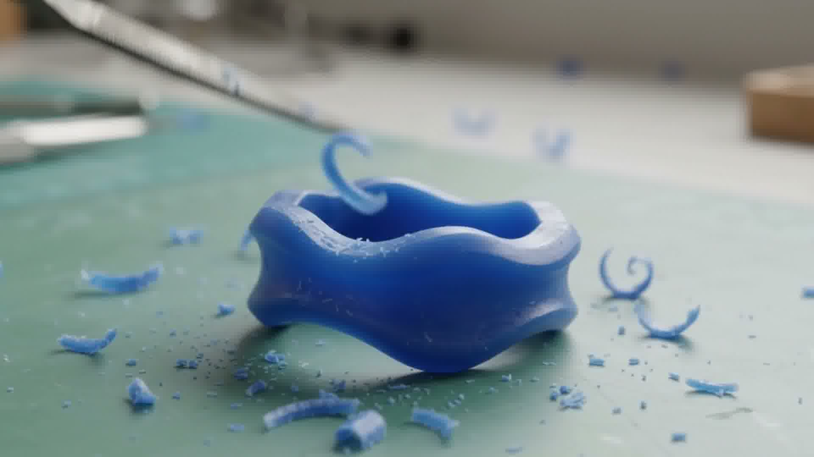
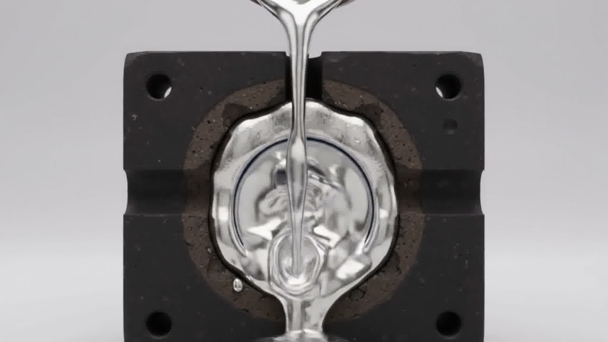
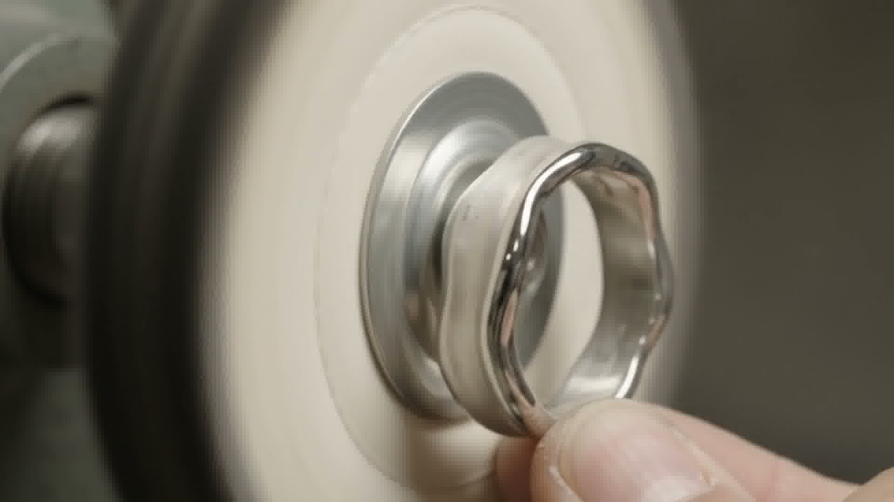
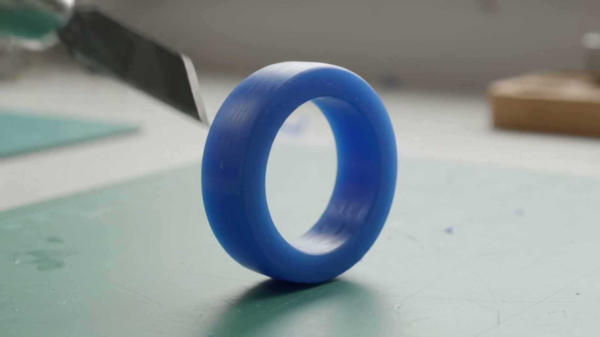
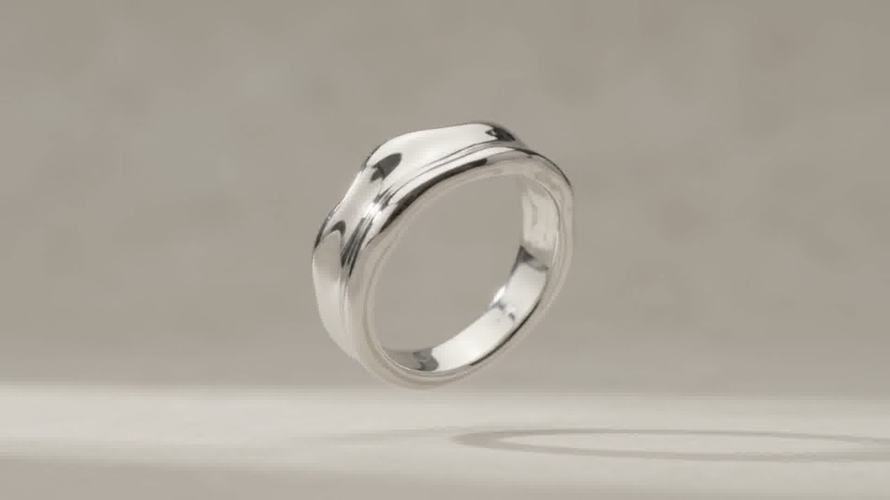

Stage 0101 · Carve
Blue jewelry wax. You shape, bevel, and sculpt your ring using fine hand chisels. The wax responds directly to hand pressure, creating organic ridges or clean geometric planes.
BISHU bridges the intimate world of personal tactile making with traditional foundry casting. You begin with an unformed block of blue jeweler's wax, carving every contour to match your own hands.
Once carved, your wax master is invested, burned out, and cast into solid 925 sterling silver. Every ridge, facet, and tool mark you create remains captured forever in solid precious metal.
From malleable blue jeweler's wax to finished sterling silver heirloom jewelry.

Stage 01Blue jewelry wax. You shape, bevel, and sculpt your ring using fine hand chisels. The wax responds directly to hand pressure, creating organic ridges or clean geometric planes.

Stage 02The wax pattern is transformed through lost-wax casting into solid silver. Molten 925 sterling silver fills the inverted mold cavity, replacing the wax in exact detail.

Stage 03The raw silver ring is refined, sanded, and polished into the finished piece. Rotary tools smooth the internal fit before a cotton buffing wheel imparts a luminous mirror sheen.
The crispness of the finished ring relies on the density of the carving wax and the metallurgical purity of the casting alloy.
Specially formulated hard blue wax with minimal brittleness. Holds razor cuts, fine curves, and ergonomic contours without cracking or softening under hand warmth.
92.5% pure elemental silver alloyed with 7.5% copper for superior structural strength, tactile weight, and brilliant reflectivity when hand-buffed.


Explore ring dimensions, surface treatments, and estimated casting weight before carving.
Sculpted by your hand in blue carving wax, lost-wax cast in solid sterling silver with high mirror finish.
Click the inspection markers to examine the handcrafted details of the solid sterling silver ring.
No two rings share the same contour. The organic crests and valleys reflect your natural carving gestures preserved forever in metal.
Hand-buffed on cotton wheels with fine jeweler's rouge, capturing high-contrast reflections across undulating planes.
Smooth internal radiusing ensures a comfortable daily fit that slides smoothly over knuckles without pinching.
Cast in 100% solid sterling silver (never hollow or plated). Noticeable tactile heft, structural permanence, and certified purity.
Everything required to carve your master band, shipped directly to your door.
One practice blank to test carve cuts and texture ideas, plus one final blank for your finished master ring design.
Hardened steel Japanese sculpting knife with bevel and contour blades for both sweeping curves and sharp facet planes.
Aluminum jeweler's sizing gauge and stepped sizing mandrel to guarantee accurate internal diameter for your finger.
Padded, rigid protective capsule with prepaid return courier tracking to ensure your delicate wax arrives safely at our foundry.
Everything you need to know about carving at home and our foundry casting process.
Every BISHU kit includes two full wax blanks: one practice blank to experiment with blades and techniques, and one master blank. In wax carving, accidental tool marks often become the most cherished organic features of the finished ring.
Your finished wax ring is encased in heat-resistant plaster investment. Once hardened, the mold is baked in a 750°C kiln, completely vaporizing the wax to leave a hollow negative. Molten 925 sterling silver is then poured into the exact cavity, reproducing every micron of your carving.
From the day we receive your wax ring at the foundry, casting, hand sanding, comfort-fit radiusing, and mirror polishing take approximately 10 to 14 business days. Your finished ring is then shipped back in a luxury presentation box.
Every ring is 100% solid sterling silver (92.5% pure silver alloyed with 7.5% copper). We never plate, fill, or hollow out the bands. It carries significant tactile weight and lasts for generations.
Start with wax. Finish in silver.
Receive the jeweler's carving wax and precision tools. Shape your personal band at your own pace, and return your carved wax to our foundry for casting in solid sterling silver.